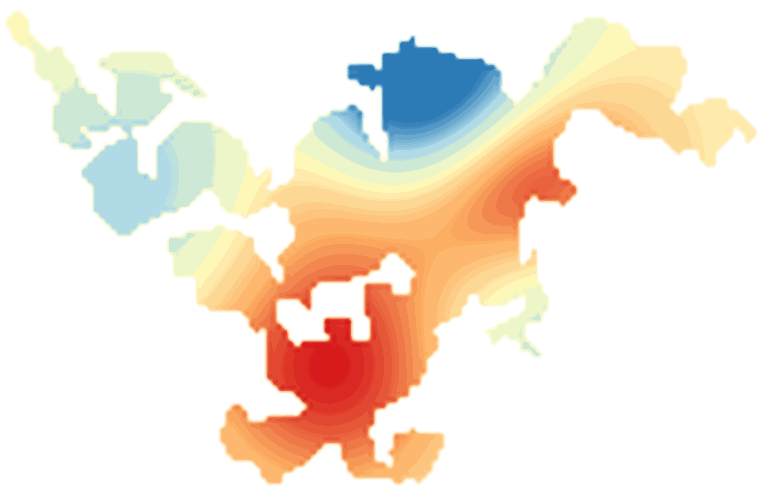

LakeScope › MN
Lake Minnetonka today
Updated 2026-11-14 - Atlas Labs
Clear water, 50°F water, level steady, near normal, calm this morning.
Water level
928.36 ft
USGS gauge 05289000 - 2026-11-14
7-day trend: steady (-0.07 ft). Compared with normal for this date: -0.2 ft (same weeks, 2016-2025).
Water clarity and algae
Clear water Last clear view: about a week ago.
Surface temperature
50°F
seen from space on 2026-11-11

Ice
Open - 0% ice cover
Estimate from weather and satellite, not a measurement. Check the ice yourself before going on it.
Weather, next 3 days
| Day | Sky | High / low | Wind | Rain |
|---|---|---|---|---|
| Saturday | Sunny | 43 / 24°F | 5 mph SSE | 0% |
| Sunday | Sunny | 47 / 31°F | 10 mph S | 0% |
| Monday | Sunny | 53 / 39°F | 15 mph SSW | 0% |
Sunrise 07:10 - sunset 16:46 - Waxing crescent. National Weather Service.
Get the LakeScope app: alerts and the 3-D view of Lake Minnetonka